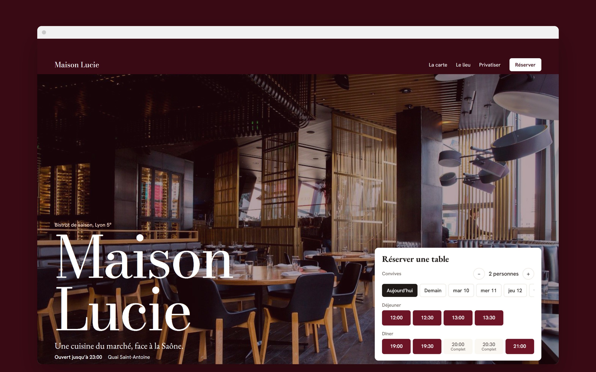
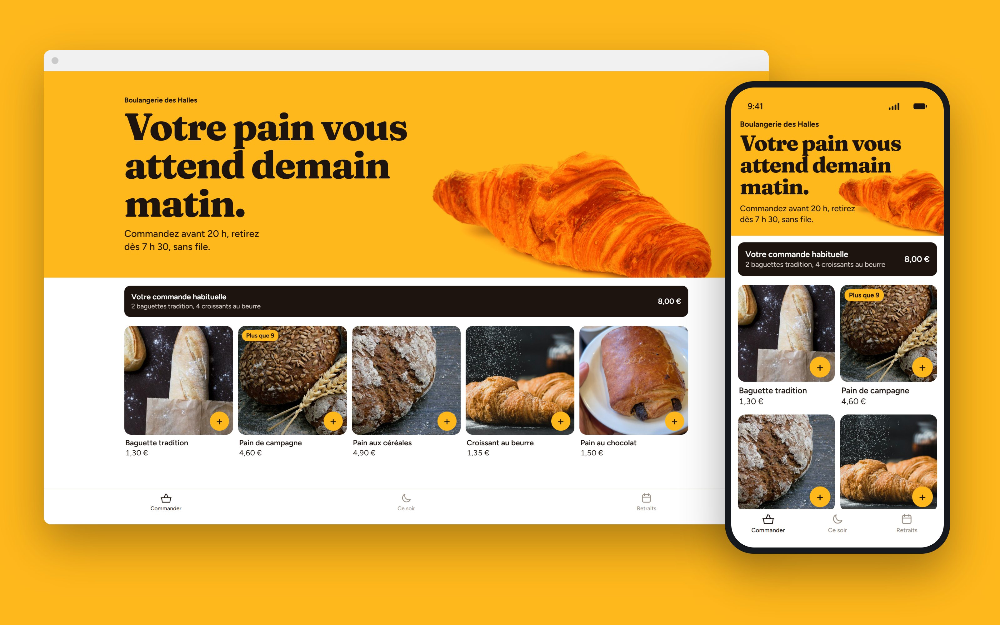
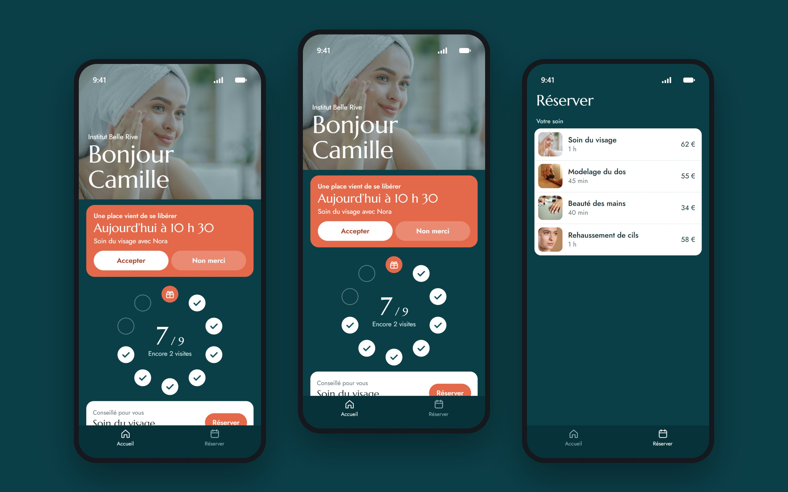
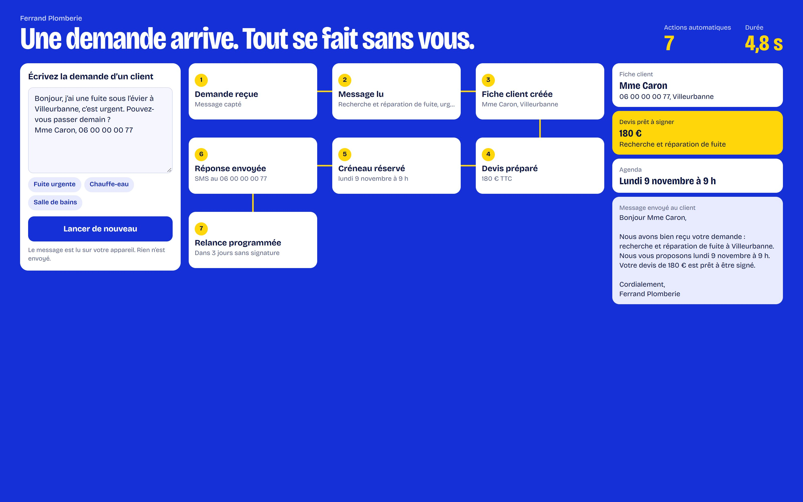
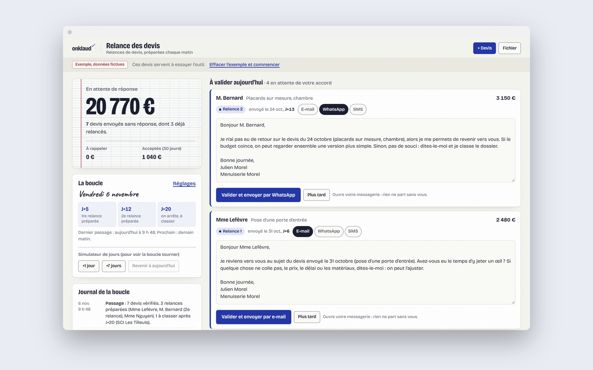

Tout ce que nous créons, à essayer.
Sites, boutiques, applications, logiciels, automatisations et outils. Les entreprises sont fictives, et tout fonctionne réellement.

Maison Lucie, restaurant
Site internet
- Avant
- Pendant le service, le téléphone sonne. Vous ne pouvez pas répondre. Une table annulée reste vide jusqu’au soir.
- Avec Onklaud
- Les clients réservent eux-mêmes. Une table annulée est proposée automatiquement à la liste d’attente.

Boulangerie des Halles
Boutique en ligne
- Avant
- Vous produisez trop et vous jetez le soir. Le matin, les clients font la queue pour rien.
- Avec Onklaud
- Les clients commandent en ligne. La production se calcule. Les invendus sont proposés le soir.

Institut Belle Rive
Application mobile
- Avant
- Une place se libère et reste vide. Une cliente fidèle ne revient pas.
- Avec Onklaud
- Vos clientes réservent et suivent leur fidélité depuis leur téléphone. Les places libres se remplissent plus facilement.

Atelier Morel, rénovation
Logiciel de gestion
- Avant
- Le soir, au lieu de rentrer, vous relancez les devis et vous répondez aux messages « Où en est mon chantier ? ».
- Avec Onklaud
- Chaque matin, vous voyez l’argent à récupérer. Les clients signent, paient et suivent leur chantier en ligne.

Ferrand Plomberie
Automatisation
- Avant
- Une demande arrive. Vous la lisez le soir, puis vous ressaisissez tout.
- Avec Onklaud
- Le message est lu, la fiche et le devis se créent, le créneau est réservé et le client reçoit sa réponse.

Relance des devis
Outil sur mesure
- Avant
- Vos devis sans réponse dorment dans un tableau.
- Avec Onklaud
- L’outil repère ceux à relancer et prépare les messages. Il est gratuit et sans compte.